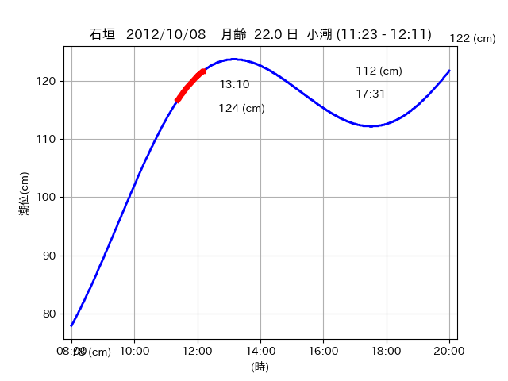
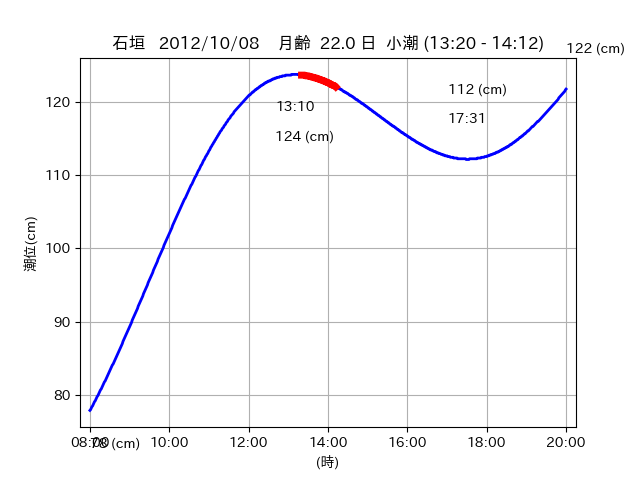

<!DOCTYPE html>
<html>
<head>
    
    <meta http-equiv="content-type" content="text/html; charset=UTF-8" />
    
        <script>
            L_NO_TOUCH = false;
            L_DISABLE_3D = false;
        </script>
    
    <style>html, body {width: 100%;height: 100%;margin: 0;padding: 0;}</style>
    <style>#map {position:absolute;top:0;bottom:0;right:0;left:0;}</style>
    <script src="https://cdn.jsdelivr.net/npm/leaflet@1.9.3/dist/leaflet.js"></script>
    <script src="https://code.jquery.com/jquery-3.7.1.min.js"></script>
    <script src="https://cdn.jsdelivr.net/npm/bootstrap@5.2.2/dist/js/bootstrap.bundle.min.js"></script>
    <script src="https://cdnjs.cloudflare.com/ajax/libs/Leaflet.awesome-markers/2.0.2/leaflet.awesome-markers.js"></script>
    <link rel="stylesheet" href="https://cdn.jsdelivr.net/npm/leaflet@1.9.3/dist/leaflet.css"/>
    <link rel="stylesheet" href="https://cdn.jsdelivr.net/npm/bootstrap@5.2.2/dist/css/bootstrap.min.css"/>
    <link rel="stylesheet" href="https://netdna.bootstrapcdn.com/bootstrap/3.0.0/css/bootstrap-glyphicons.css"/>
    <link rel="stylesheet" href="https://cdn.jsdelivr.net/npm/@fortawesome/fontawesome-free@6.2.0/css/all.min.css"/>
    <link rel="stylesheet" href="https://cdnjs.cloudflare.com/ajax/libs/Leaflet.awesome-markers/2.0.2/leaflet.awesome-markers.css"/>
    <link rel="stylesheet" href="https://cdn.jsdelivr.net/gh/python-visualization/folium/folium/templates/leaflet.awesome.rotate.min.css"/>
    
            <meta name="viewport" content="width=device-width,
                initial-scale=1.0, maximum-scale=1.0, user-scalable=no" />
            <style>
                #map_4feb392ea280ad4b0027644ecae6cdc5 {
                    position: relative;
                    width: 2048.0px;
                    height: 1600.0px;
                    left: 0.0%;
                    top: 0.0%;
                }
                .leaflet-container { font-size: 1rem; }
            </style>
        
</head>
<body>
    
    
            <div class="folium-map" id="map_4feb392ea280ad4b0027644ecae6cdc5" ></div>
        
</body>
<script>
    
    
            var map_4feb392ea280ad4b0027644ecae6cdc5 = L.map(
                "map_4feb392ea280ad4b0027644ecae6cdc5",
                {
                    center: [24.212, 124.004],
                    crs: L.CRS.EPSG3857,
                    ...{
  "zoom": 12,
  "zoomControl": true,
  "preferCanvas": false,
}

                }
            );

            

        
    
            var tile_layer_0069430c8c622e92330c01b19dba44df = L.tileLayer(
                "https://cyberjapandata.gsi.go.jp/xyz/seamlessphoto/{z}/{x}/{y}.jpg",
                {
  "minZoom": 0,
  "maxZoom": 18,
  "maxNativeZoom": 18,
  "noWrap": false,
  "attribution": "\u5730\u7406\u9662\u5730\u56f3",
  "subdomains": "abc",
  "detectRetina": false,
  "tms": false,
  "opacity": 1,
}

            );
        
    
            tile_layer_0069430c8c622e92330c01b19dba44df.addTo(map_4feb392ea280ad4b0027644ecae6cdc5);
        
    
            var marker_2faefbd8b3e6778a35a6c3ecf9b2a8d9 = L.marker(
                [24.2253, 123.9527],
                {
}
            ).addTo(map_4feb392ea280ad4b0027644ecae6cdc5);
        
    
            var icon_418c751d1a5268c39aef407e1552534d = L.AwesomeMarkers.icon(
                {
  "markerColor": "orange",
  "iconColor": "white",
  "icon": "info-sign",
  "prefix": "glyphicon",
  "extraClasses": "fa-rotate-0",
}
            );
        
    
        var popup_708fc8b54cdcc5b66c07027c264adfcf = L.popup({
  "maxWidth": "100%",
});

        
            
                var html_2e356c7d32e3798e30cc78d1a038d4c7 = $(`<div id="html_2e356c7d32e3798e30cc78d1a038d4c7" style="width: 100.0%; height: 100.0%;"><table><tr><td></td></tr><tr><td><center>20121008 No.1 </center></table></td></tr></table</div>`)[0];
                popup_708fc8b54cdcc5b66c07027c264adfcf.setContent(html_2e356c7d32e3798e30cc78d1a038d4c7);
            
        

        marker_2faefbd8b3e6778a35a6c3ecf9b2a8d9.bindPopup(popup_708fc8b54cdcc5b66c07027c264adfcf)
        ;

        
    
    
                marker_2faefbd8b3e6778a35a6c3ecf9b2a8d9.setIcon(icon_418c751d1a5268c39aef407e1552534d);
            
    
            var poly_line_cb5e178562a187688c385b03f55392c8 = L.polyline(
                [[24.2253, 123.9527], [24.2175, 123.9428]],
                {"bubblingMouseEvents": true, "color": "#00FFFF", "dashArray": null, "dashOffset": null, "fill": false, "fillColor": "#00FFFF", "fillOpacity": 0.2, "fillRule": "evenodd", "lineCap": "round", "lineJoin": "round", "noClip": false, "opacity": 1.0, "smoothFactor": 1.0, "stroke": true, "weight": 3}
            ).addTo(map_4feb392ea280ad4b0027644ecae6cdc5);
        
    
            var marker_490ae3e24b7b4fdbf2b11d83077dc6ee = L.marker(
                [24.2102, 124.0078],
                {
}
            ).addTo(map_4feb392ea280ad4b0027644ecae6cdc5);
        
    
            var icon_3c56ae667849c0d6def1ab93bee56293 = L.AwesomeMarkers.icon(
                {
  "markerColor": "orange",
  "iconColor": "white",
  "icon": "info-sign",
  "prefix": "glyphicon",
  "extraClasses": "fa-rotate-0",
}
            );
        
    
        var popup_f333eb84c827d916bbc880d0c62faadf = L.popup({
  "maxWidth": "100%",
});

        
            
                var html_7b67370adf24e6c602e1055f5e6d49e3 = $(`<div id="html_7b67370adf24e6c602e1055f5e6d49e3" style="width: 100.0%; height: 100.0%;"><table><tr><td></td></tr><tr><td><center>20121008 No.2 </center></table></td></tr></table</div>`)[0];
                popup_f333eb84c827d916bbc880d0c62faadf.setContent(html_7b67370adf24e6c602e1055f5e6d49e3);
            
        

        marker_490ae3e24b7b4fdbf2b11d83077dc6ee.bindPopup(popup_f333eb84c827d916bbc880d0c62faadf)
        ;

        
    
    
                marker_490ae3e24b7b4fdbf2b11d83077dc6ee.setIcon(icon_3c56ae667849c0d6def1ab93bee56293);
            
    
            var poly_line_c5bf3de45dd14b83b2bdc20addd27144 = L.polyline(
                [[24.2102, 124.0078], [24.2099, 124.0082]],
                {"bubblingMouseEvents": true, "color": "#00FFFF", "dashArray": null, "dashOffset": null, "fill": false, "fillColor": "#00FFFF", "fillOpacity": 0.2, "fillRule": "evenodd", "lineCap": "round", "lineJoin": "round", "noClip": false, "opacity": 1.0, "smoothFactor": 1.0, "stroke": true, "weight": 3}
            ).addTo(map_4feb392ea280ad4b0027644ecae6cdc5);
        
    
            var marker_dd6f76d2b3c40a3482d64207196dde16 = L.marker(
                [24.2144, 124.0012],
                {
}
            ).addTo(map_4feb392ea280ad4b0027644ecae6cdc5);
        
    
            var icon_71b86ebd046409d41ebd3d155c51040f = L.AwesomeMarkers.icon(
                {
  "markerColor": "orange",
  "iconColor": "white",
  "icon": "info-sign",
  "prefix": "glyphicon",
  "extraClasses": "fa-rotate-0",
}
            );
        
    
        var popup_366b14d733ffe0d3eb0d18d2ec6272cf = L.popup({
  "maxWidth": "100%",
});

        
            
                var html_8640f80fffceadc099efd7e7ebdf97a1 = $(`<div id="html_8640f80fffceadc099efd7e7ebdf97a1" style="width: 100.0%; height: 100.0%;"><table><tr><td></td></tr><tr><td><center>20121008 No.3 </center></table></td></tr></table</div>`)[0];
                popup_366b14d733ffe0d3eb0d18d2ec6272cf.setContent(html_8640f80fffceadc099efd7e7ebdf97a1);
            
        

        marker_dd6f76d2b3c40a3482d64207196dde16.bindPopup(popup_366b14d733ffe0d3eb0d18d2ec6272cf)
        ;

        
    
    
                marker_dd6f76d2b3c40a3482d64207196dde16.setIcon(icon_71b86ebd046409d41ebd3d155c51040f);
            
    
            var poly_line_d46ec3792f3e57d231dfa1b580f1a686 = L.polyline(
                [[24.2144, 124.0012], [24.2099, 124.0069]],
                {"bubblingMouseEvents": true, "color": "#00FFFF", "dashArray": null, "dashOffset": null, "fill": false, "fillColor": "#00FFFF", "fillOpacity": 0.2, "fillRule": "evenodd", "lineCap": "round", "lineJoin": "round", "noClip": false, "opacity": 1.0, "smoothFactor": 1.0, "stroke": true, "weight": 3}
            ).addTo(map_4feb392ea280ad4b0027644ecae6cdc5);
        
</script>
</html>